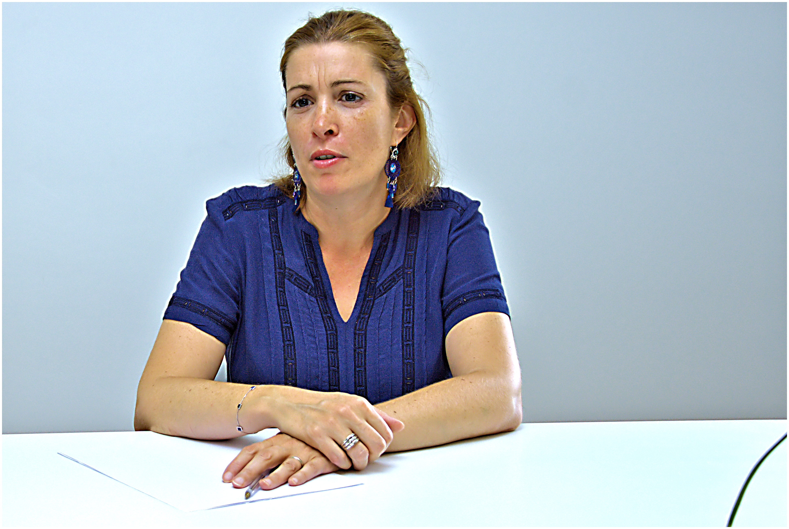
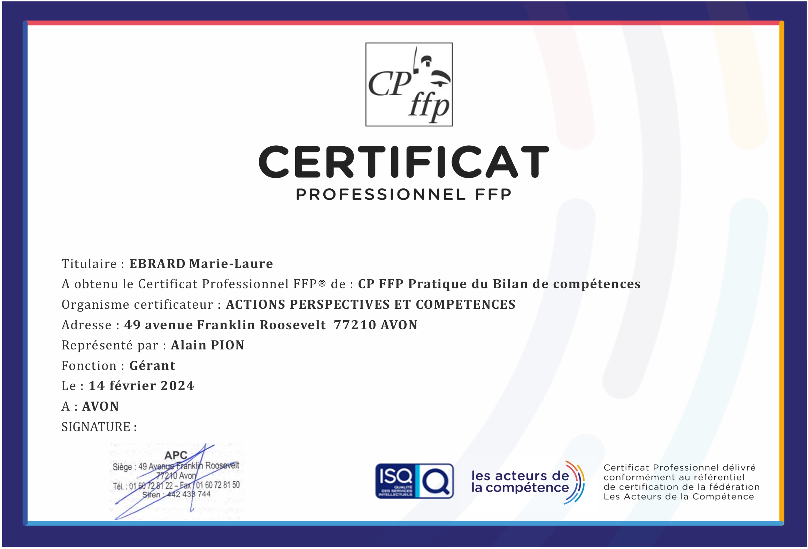

Marie-Laure Ebrard · Consultante en évolution professionnelle · Cestas (Bordeaux Sud)
Vous sentez que quelque chose doit changer dans votre vie professionnelle, mais vous ne savez pas encore quoi ni comment. Je vous accompagne avec méthode et bienveillance pour construire un projet qui vous ressemble.
Réservez un appel découverte gratuitUn bilan de compétences, ce n'est pas un examen. C'est un accompagnement structuré pour analyser vos compétences, identifier vos forces et construire un projet professionnel concret et réaliste.
Analysez vos compétences, vos motivations profondes et ce qui compte vraiment pour vous.
Définissez un plan d'action concret et réaliste — évolution, reconversion ou création.
Votre bilan est finançable via le CPF (dans la limite de 1 600 €). Un reste à charge de 103 € s'applique pour les salariés — demandeurs d'emploi et co-financement employeur exemptés.
Un accompagnement personnalisé dans mon cabinet de Cestas, dans un espace dédié et bienveillant.
Le bilan se déroule sur plusieurs semaines, à votre rythme, en présentiel dans mon cabinet à Cestas. Jusqu'à 24 heures d'accompagnement individualisé.
On définit ensemble vos besoins, vos attentes et les objectifs du bilan. C'est votre bilan — il est pensé pour vous.
2 à 3 séancesExploration de vos compétences, valeurs, motivations et aspirations à travers des outils validés et des échanges approfondis.
Le cœur du bilanFormalisation de votre projet, plan d'action concret et document de synthèse confidentiel que vous conservez.
Votre feuille de route
J'ai passé 17 ans en ressources humaines chez La Poste et MEDIAPOST — je connais le monde de l'entreprise de l'intérieur. Puis j'ai moi-même traversé une reconversion professionnelle profonde, en me formant à la naturopathie.
Cette double expérience me permet de vous accompagner différemment : avec la méthode d'une professionnelle RH certifiée, et la bienveillance de quelqu'un qui a vécu ce que vous traversez.
Les témoignages de mes premiers accompagnements seront bientôt partagés ici, avec l'accord des personnes concernées.
Le bilan de compétences est réalisé dans le cadre du réseau VAST RH, certifié Qualiopi — la garantie d'une prestation de qualité reconnue par l'État.

Réservez un appel découverte gratuit de 15 minutes. On discute de votre situation, sans engagement. C'est le bon moment pour commencer.
Réserver mon appel découverte (gratuit)